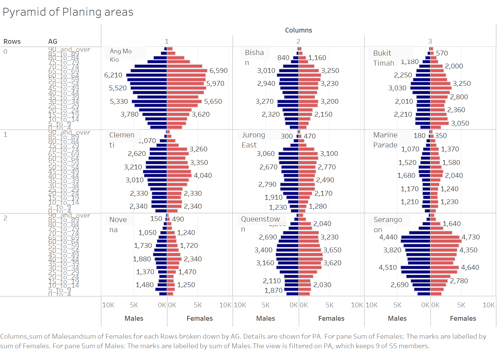
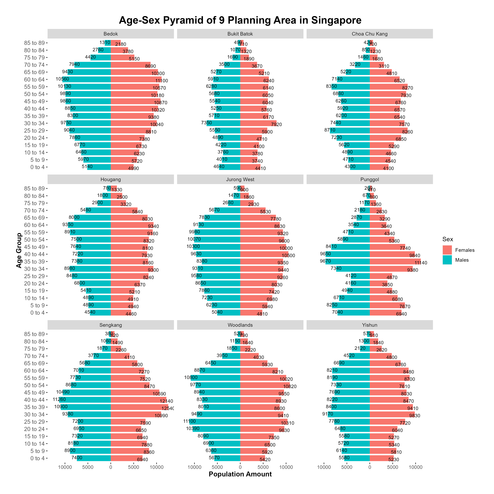

pacman::p_load(tidyverse)take-home-2
1 Overview
This take-home exercise is done based on a take-home exercise 1 submission prepared by a classmate. The peer submission will be critiqued in terms of clarity and aesthetics, and the original design will be remade using the data visualization principles and best practice learnt in Lesson 1 and 2.
The dataset used is downloaded from Department of Statistics, Singapore, and processed by RStudio tidyverse family of packages and visualized by ggplot2 and its extensions.
2 Data Preparation
2.1 Installing packages and loading libraries
2.2 Import data
popdata <- read_csv("popdata.csv")
head(popdata,10)# A tibble: 10 × 6
PA SZ Age Sex Pop Time
<chr> <chr> <chr> <chr> <dbl> <dbl>
1 Ang Mo Kio Ang Mo Kio Town Centre 0 Males 10 2022
2 Ang Mo Kio Ang Mo Kio Town Centre 0 Females 10 2022
3 Ang Mo Kio Ang Mo Kio Town Centre 1 Males 20 2022
4 Ang Mo Kio Ang Mo Kio Town Centre 1 Females 10 2022
5 Ang Mo Kio Ang Mo Kio Town Centre 2 Males 20 2022
6 Ang Mo Kio Ang Mo Kio Town Centre 2 Females 10 2022
7 Ang Mo Kio Ang Mo Kio Town Centre 3 Males 20 2022
8 Ang Mo Kio Ang Mo Kio Town Centre 3 Females 10 2022
9 Ang Mo Kio Ang Mo Kio Town Centre 4 Males 30 2022
10 Ang Mo Kio Ang Mo Kio Town Centre 4 Females 30 20222.3 Change the data type of ‘Age’ from strings to numeric
popdata <- transform(popdata,Age=as.numeric(Age))2.4 Group ‘Age’ in to ‘Age_group’
popdata<-popdata%>%
mutate(Age_group = cut(Age, breaks = c(0,4,9,14,19,24,29,34,39,44,49,54,59,64,69,74,79,84,89),
include.lowest = TRUE,
include.highest=TRUE,
labels = c("0 to 4", "5 to 9", "10 to 14", "15 to 19","20 to 24","25 to 29","30 to 34","35 to 39","40 to 44","45 to 49","50 to 54","55 to 59","60 to 64","65 to 69","70 to 74","75 to 79","80 to 84","85 to 89")
))
head(popdata,10) PA SZ Age Sex Pop Time Age_group
1 Ang Mo Kio Ang Mo Kio Town Centre 0 Males 10 2022 0 to 4
2 Ang Mo Kio Ang Mo Kio Town Centre 0 Females 10 2022 0 to 4
3 Ang Mo Kio Ang Mo Kio Town Centre 1 Males 20 2022 0 to 4
4 Ang Mo Kio Ang Mo Kio Town Centre 1 Females 10 2022 0 to 4
5 Ang Mo Kio Ang Mo Kio Town Centre 2 Males 20 2022 0 to 4
6 Ang Mo Kio Ang Mo Kio Town Centre 2 Females 10 2022 0 to 4
7 Ang Mo Kio Ang Mo Kio Town Centre 3 Males 20 2022 0 to 4
8 Ang Mo Kio Ang Mo Kio Town Centre 3 Females 10 2022 0 to 4
9 Ang Mo Kio Ang Mo Kio Town Centre 4 Males 30 2022 0 to 4
10 Ang Mo Kio Ang Mo Kio Town Centre 4 Females 30 2022 0 to 42.5 Check the top 9 planing area with the most population
pop=popdata %>% group_by(PA) %>%
summarise(Pop = sum(Pop),
.groups = 'drop')
top_n(pop,9,Pop)# A tibble: 9 × 2
PA Pop
<chr> <dbl>
1 Bedok 278970
2 Bukit Batok 165280
3 Choa Chu Kang 190780
4 Hougang 227610
5 Jurong West 258700
6 Punggol 186270
7 Sengkang 253250
8 Woodlands 252570
9 Yishun 2233402.6 Filter the planing area
popdata <-filter(popdata,PA %in% c("Bedok","Jurong West","Yishun","Punggol",'Bukit Batok',"Woodlands","Sengkang","Hougang","Choa Chu Kang"))
popdata <- popdata[!is.na(popdata$Age_group),]3 Age-Sex Pyramid Using Trellis Display Critique and Remake
3.1 Critique
The graph below is an Age-Sex Pyramid made by a classmate

Clarity
The graph is generally clear in terms of x-axis labels, planning area labels and overall layout. The audience is able to gasp the general trend of population distribution of each planning area.
Y-axis label ‘AG’ is an acronym, which is vague, can be improved by using ‘Age Group’. And the group name was compressed, this will bring problem for the audience.
Some value labels are blocked and some groups have labels but others do not.
The ‘Column’ and ‘Row’ should be hided.
The title of the graph should be bold and bigger
Aesthetics
Colors chosen are clean and easily readable to the audience.
The planning area labels could be more clean.
3.2 Remake
pop1 <-popdata %>% group_by(PA,Age_group,Sex) %>%
summarise(Pop=sum(Pop),.groups='keep')ggplot(data=pop1,
aes(x=Age_group,fill=Sex,
y = ifelse(test = Sex == "Males",
yes = -Pop, no = Pop))) +
geom_bar(stat = 'Identity',width = 0.8) +
scale_y_continuous(labels = abs, n.breaks=7,limits = max(pop1$Pop) * c(-1,1)) +
labs(x='Age Group',y = "Population Amount") +
coord_flip()+
facet_wrap(~ PA) +
ggtitle("Age-Sex Pyramid of 9 Planning Area in Singapore") +
theme(plot.title = element_text(size=18,face='bold',hjust = 0.5),
panel.grid.major =element_blank(),
panel.grid.minor = element_blank(),
panel.background = element_blank(),
axis.title = element_text(size=12,face = "bold"),
axis.text.y = element_text(hjust = 1,
size=10),
plot.margin=unit(rep(1,4),'cm'))+
geom_text(aes(label=Pop),
position = position_dodge2(width = 0.5, padding=0.3,preserve = 'single'),
vjust = 0.6, hjust = 0.5,size=3)
ggsave("1.png", units="in", dpi=300, width=12, height=12, device="png")